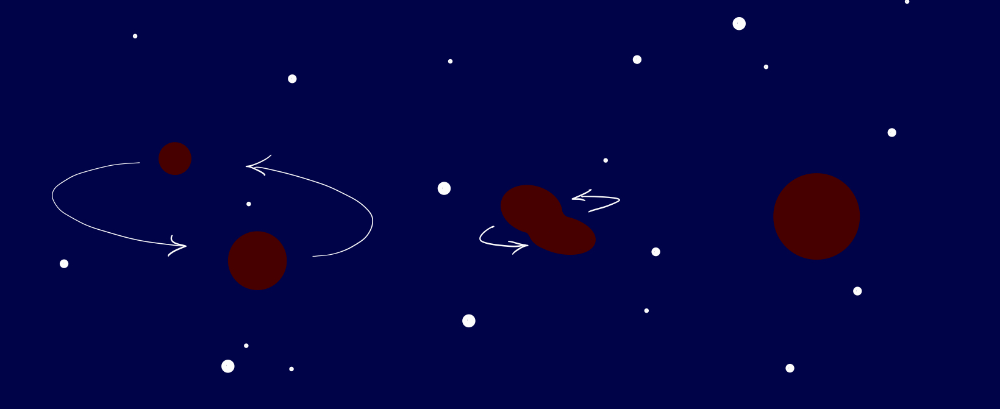
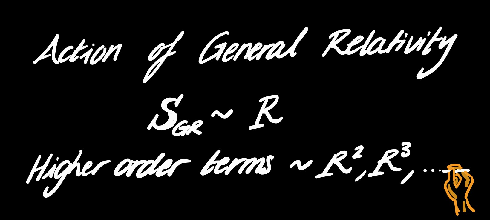

Gravitational Wave Tests of General Relativity
Gravitational wave signals from merging binary black holes can be used to test the nature of gravity and of the black holes themselves.
We have some reasons to think that physical gravity should deviate from the predictions of General Relativity. General Relativity is not renormalizable, it requires the inclusion of infinitely many higher order terms in gravitational curvature to be quantizable. This gives us motivation to consider other theories of gravity, including those involving some of those higher order terms in gravitational curvature. In addition, we would like to understand how closely the black holes that we observe in our universe resemble the black holes of General Relativity.
Gravitational waves offer us a particular window into physics where the gravitational field is very strong. Those are the regimes where curvature is also large, and higher order terms in the gravitational action might be measurable.
Making flexible and theory agnostic tests of General Relativity is difficult. We would like to test for theories that we haven't thought to write down as well as those we have. Flexible tests will also pick up inadequacies in our models, as well as any potential physics beyond General Relativity.